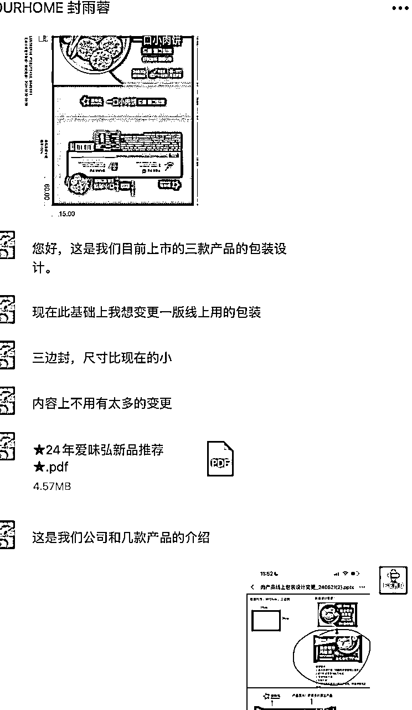

来源：https://m76za4xx2c.feishu.cn/docx/F4bsd50zLoYZ3Wx07WCcMlFjnjd
【微信昵称】李凤娇
【所在地区】上海
【自我介绍】品牌公司创始人、包装设计师、天赋优势教练。
1、美术指导：职场12+年，深耕设计，涉猎4大行业（印刷、广告、互联网、食品）
2、专业加持：出版印刷专业+工商管理
3、喜欢挑战：今年4月份已选择裸辞，创办品牌公司，新媒体领域探索（小红书），在实践中持续自我优势挖掘；
4、包装设计师IP创富计划，专业+营销+商业+心力+教练，三大壁垒融汇贯通，构建设计师的赚钱之道；
【我可以为其他船员提供什么帮助】
1、探索个人优势定位、帮助更多人打造职场外的第二增长曲线；
2、如何从0-1快速借助包装设计，减少运输成本，赋能业务绩效增长；
————————————
tips：
虽然有了自己的公司，可以叫做以为名义上的”创业者“
但是，我并不是很喜欢“创业者”这个词，
他们看上去就像商人，而我根本不喜欢经商，我也不擅长
我喜欢的仅仅是创造而已，创造！创造！
我最终也意识到，企业本身不是目的。
而是用来创造的工具，一种法律意义上的组织，仅此而已。
在我心里，成立ANYTIFF从来不仅仅为了赚钱
对我而言，金钱和名望远不如独立和自由重要
我想把自己热爱的、世界需要的与能赚钱的和擅长的结合起来
我想去为我爱的、同频的那些客户提供最棒的服务
最后再用我爱的作品，吸引我爱的人，购买我爱的产品，组成我爱的世界。
在这里必须要感谢我的宝藏前销售总监奇哥，感谢他的引荐，他的认可。
刚带着妈妈从北京旅行回来，就接收到了宇宙的召唤。说明旅行对我来说，是一件很酷的事情，这种自由的感觉，很享受。那时候作品案例可以快速的提供给到对方，是因为之前有个客户需要，正好整理收藏了一份。导致我在出租车上就可以快速的将作品丢过去。
后来对方提到需要一些品牌策略方面的作品集（那个时候我完全没有意义去梳理这部分内容，有作品，但是没有包装），但是我内心就给了自己极大的肯定，我坚信自己可以做到。于是很自然的回复了“有的”。但是我又没有立刻去整理以前的作品全案，而是遵从自己当下的感觉，先去了趟长沙李自健美术馆，第二天去老家看了下爷爷奶奶。
第二天客户又提醒了下，我想，我需要给自己一个截止日期，毕竟我是一个完美主义者，当我给了自己时间限制与压力之后，我就会去思考这件事了，毕竟我也是一个喜欢说话算话的人，我知道，只要我答应的事情，我一定做到，并且会做的非常好。又深刻的感知到我是一个超级强烈的时间乐观主义者，我的动力也是来自对自己的做事标准的坚守，以及无论付出什么代价，都要在预定期限前交付任务。中间熬夜了几次是可想而知的，因为我从来不是一个会第一时间给到对方作品的人。
随后与产品建立沟通，由于前期已经准备好了作品案例，所以同步分享给产品，就很快了。首次语音需求沟通，大致了解下目前企业的现状，接收brief：包装设计、品牌logo、详情页视觉策划等。
在这期间就是尽最大的可能展示自己的优点，过去做的案例
即使复盘与总结，比如，我也通过这次的行动，让我看到了作为设计师出身的我的一个通病，那就是分享的内容，更多是站在自己的设计专业角度分享的内容；虽然作品得到认可；但是如果可以可以从生意角度，从消费者角度、货架陈列出发，用更加大白话的语言表达出自己当时做这个产品的思路（大老板），比如，为什么字体要这样设计？为什么要用这个配色？灵感来在哪里？以及印刷落地所遇到的困难，如何解决的？整体的效果
下周会议议题准备——新的设计服务商，大老板
（暂定在8.28 线下）
交流内容议题
关于如何报价，如何坚定自己的价格？
这就需要自己内心对自己的认可与价值的配得感了。
我们的专业度一定是前提。你需要有具体可为客户提供落地的解决方案。
每位顾客一上来都是希望简单粗暴的了解到一个具体的报价数字，但是我们需要知道，一切都价格都建立在清晰的需求上，只有当我们了解到具体的需求，我们才能够为客户提供所需的报价，对于设计这种差异化的定制服务，本身就无法用统一的标准价格去走。
这也需要你去学习如何可以通过提问的形式，去引导客户，得到你心底想要的答案。
定价不是件容易的事。
最开始，你可能想免费提供你的产品，或者以低于你时间成本的价格来收费。
不要这样！要生存下来，你需要赚到钱。
而要做到这一点，唯一的方式是不仅要收费，还要收取让自己活下去的费用。
定价也像生意的其他部分一样，都可以迭代。你拥有的客户类型最后会影响你收费的方式以及金额。
但是，即使你从很低的起点开始，逐渐做大，收取一些费用也很重要。
大家也需要知道，我们是在与人建立合作，很多东西并不能既要又要，很多东西需要软技能去协调，
这个可以根据自己的实际情况灵活去调整，去做一些适当的谦让或者额外的增值服务。
该坚持的部分坚持，该退让的部分就选择退让，主打一个松弛有度的态度感。
然后我就与新客户合作顺利进行到下一阶段了。
在这个过程中，我相信会对于仅仅专注于专业技能的设计师来说，会很有挑战，我也不例外
现在总结分享出来，你会觉得我做的很轻松，但是在实际的过程中，我很紧张，就像所有人一样，心里也经历过了很长一段时间的斗争，脑袋中会不断的蹦出来很多新的思绪与困扰，你想要与这个客户合作，但是又不想妥协报价怎么办？要是不妥协价格，最终客户不找你了又怎么办？明明自己很擅长做这件事，可以快速的帮助客户解决问题，但是对方现阶段无法用的起你现在的这个报价怎么办？
我想告诉大家，这是一个很正常的过程。不仅仅是设计行业会如此，任何行业都会遇到。以前我们在与山姆采购谈判的时候，都要经过好几轮，大半年的时候才能明确产品的进场情况。就像前面提到的，请你坚定不移的相信自己，你值得拥有这个价格，你值得为尊重你且懂你的客户提供最好的服务。
比如下面这位，我很喜欢的一家公司，它们的产品我也很喜欢，也是报价之后无下文的，我在坚定之后，也会失去意向客户，它们看到报价之后，就没有下文了，我也会思考要不要降价？但是，完全不必要，因为当你的能力被认可，在对方找到了便宜的服务商，他们浪费了时间之后，依旧还会找到你。
这一点请务必相信，因为我也遇到过。同频、尊重真的很重要。不要与低价的客户去合作。

心力感很重要，一旦你不自信，自我否定的时候，你就无法承接你的客户
也无法遇到更高频率的人，只有你变好了，你才能遇到更高频率的人
比如，我因为配得感、自信感上升，宇宙就派送了一位懂我的客户
遇到了同频的客户，在每日的合作交流中，就是一种享受，毫无内耗
她也会给到我很多除了工作上的能量，这是我感受到最棒的一点
就算过程中有受阻，她也依旧相信，哈哈，，那就继续与你们分享下我的宝藏客户
就是有这么可爱的客户与朋友，她也会与我分享她以前创办公司的经历
在慢慢的探索与迭代中，现在，有人知道我，也信任我，它们向我寻求我的专业建议
我知道，我在开始以一种能够不断改进和迭代的系统化和可复制的方式帮助他们的时候了。
因为我的公司ANYTIFF就是一个以流程为基础建立起来的极简主义公司，我经营着一家品牌设计公司
经历了也目睹了设计师在创作的过程中因无法深层理解客户的需求而作出的作品被客户否定的痛苦挣扎
为了可以让我们更加清晰的知道客户所需，以及客户是否真的有想清楚他们所需
在实践的过程中，你可能会因为客户告诉过你他们想要什么，甚至是他们愿意为什么样的产品付钱而认为自己知道客户真正想要什么。但是只靠嘴说是没用的。在你解决客户的问题，并最终收到付款，完成整个流程之前，你不会知道客户想要并且愿意为之付钱的东西是什么。在能够扩大规模之前，你需要将一个顾客的问题解决的相当好，即使不算完美。如果方案有效果，很棒；如果不行，你可能会意识到，你想要扩张，但你的客户却毫不在乎。如果是这种情况，你可能需要靠另辟蹊径。
最好的社区是由兴趣、价值观、技能相同，但是其他方面又有所不同的个体组成。
不管怎样，在一开始找到你的社区非常重要，不仅是为了你的生意，也是为了你自己的幸福。
他们像我一样，想要“把自己热爱的事变成谋生之技”
他们像我一样，关心的首要问题是彼此建立联系，能够有空间、时间和自由去探索自己的兴趣
并最终通过有意义的方式把自己热爱的事转化成事业。
我一直信仰着创造长期价值；
期待可以做一件50年的事业，为未来几十年建立关系；
为自己塑造独特、真实的声音
我虽然已经在生财这个社群里2年了，以前在设计日记也有3年，但我发现自己并不有真正的有意识的将自己置于社区中，我自己既没有去分享，也没有在社区贡献价值（发帖、评论、参与更广泛的对话）。
在我参加了几次航海，通过一些航海心得的分享，收获到了大家的肯定与点赞，才渐渐的意识到，当你在社区里展示你正在做的事、教授你正在学的东西，为你的社区带来新素材等方式进行创作，影响力会扩大很多倍。
尽管潜水比不必要的评论好，但给社区增加价值更好，哪怕你觉得还没有准好。
如果你也和我一样为此而纠结许久，那么请提醒自己，如果有内容可以补充却不去做，那就是自私的！
你要如何说？如何吸引社区中那些你已经慢慢了解并尊重的人的注意？
其中关键在于了解自己，用自己擅长的方式，去创造价值。
就像为创作者提供营销服务的ConvertiKit品牌创始人内森.巴瑞（Natha Barry）将其挂在办公室里的三句话：
而后我又思考着，对于包装设计这件事，我和很多人一样有同样的技术，一开始，我们的起点也是相同，进度也一样，为什么他人可以翻身，从一个项目赚到7位数，而我却没有这个能力？我们之间的差别在哪里？
我们的区别就在于，他们一直以来在分享他所知道的每一件，而我没有。
我也是通过慢慢的探索才发现，他们都在做这件事，那就是分享，分享做事的过程。
而我，因为喜欢独处，思考，我总是在接项目、做项目、交付项目，然后就不管了，继续往前走。
在继续下一步之前，他会把做那个项目学到的所有东西分享出来。
借助各种自媒体平台，他分享他的设计、把所有具体方法写成教程。每一个项目他们都这么做。
在现在这个自媒体的世界里，尽管存在所谓的标题党、各种制造焦虑、营造危机感，但是，我也仍然想要建议大家去表达，去建立属于自己的社区，在那里去跟同频的人一起创造你们想要的世界。你们可以在一场同频的沙龙里，一起来一场观点和思想的碰撞，可以在沙龙社区感受到能量和乐趣。
这也是我这一年一直思考于布局的事情，我很相信，只要你总是在学习，那么你就总有东西可以教给被人
帮他们厘清下一步怎么做最好。这几年的跨界学习、专业领域坚持，公司的建立流程等
比如：
裸辞后，你的社保是可以选择继续缴纳还是断缴就行？
由于一些现实性的问题不能断缴，又如何去申请与解决这种灵活就业的社保问题？
创办公司，营业执照如何办理？公司名如何起？
如何自己可以快速的知道自己想到的名字是可行的？
以及自从23年踏入自媒体的大门，为何从满怀的热情好奇到自我怀疑？
那种被外界精心策划的美好世界所吸引的心理因素是为什么？
为什么知道了很多方法，却依然无法说服自己去用那些所谓制造焦虑爆款方式去创作？
....
我知道我经历过的一切，都可以是我分享与创作的素材
突然发现，在你为其他人解决问题的同时也为自己解决问题，这是一举多得的事情，
如果你创造了一款解决自己问题的产品，那你至少会拥有一个用户
而且，你在一天中的任何时候都可以跟那个用户交流。
后续，我也会分享，我也在记录我服务的每位顾客中所遇到每一步事情，记录做事的过程，
并把我做的那个项目学到的所有东西分享出来。
我会尝试去风向我的落地包装设计，把这些具体的思考与方法写成教程。
虽然我现在还不是这个领域的权威，期待我经历的所有过程可以缩短你们的成功路径。
我相信，这个方法，对每一位长期顾客，我都会有一本战术手册。而这份文件将是我生意的真正MVP。
我相信，这个记录的过程，也能帮助我弄清楚哪些奏效、哪些不行
我也相信，未来的这份文档，它也会帮助你发现你在创造的是不是人们真正需要或者会购买的东西。
现在的分享欲好像越来越多了，很享受这种创造的过程，也没想去年还在羡慕那些写长文的博主
今年我已经可以输出与分享如此长的心得感受文，没学习什么表达技巧，纯凭心流的享受，看了些书而已
比如，当我在第一次分享提案与会议的时候，我也会很紧张
那么我就会按照之前自己寻找的适合自己的对话方式
为自己做一场深度的对话，看看自己到底在害怕的是什么
通过自己擅长的自我觉察的形式，调出我的内在小孩来向我提问
降价真的就可以得到这个客户吗？就算得到了，在你们合作的过程中，真的是同频的吗？
通过一步一步的自我引导，结果就很明显了
以下是我思考中采用的一些对话形式，希望对你有帮助
告诉大家一个秘密，每一个创始人，即使是那些最成功的创始人，
最开始也是什么都不知道，都是从零开始学习的。
创业的关键在于兴趣，而不是技能。
与其关注你不知道的东西，不如关注你知道的东西。
刚开始的时候，你不需要团队、资金或者某个文凭来创业，
你也不需要去完成并交付作品（产品）来让你的想法变成现实，
可能以后会需要，不过当你拥有一款大家真正看中的作品（产品）时，
这些事情都会以比你想的更容易、更便宜的途径实现，通常，它们会找到你。
这个世界也会告诉你，要么变强大，要么卷铺盖走人。
作为设计师，我太能感受到，当我们接到需求的时候，那种急迫去操作执行的经历，
但是，我想与大家分享的是，开始要小，而你能达到的最小程度就是什么也不创建
请不要直接步入设计环节，而要坚持使用笔和纸，去深度思考，
去享受当下自己浮现的任何情绪以及想要做的任何事情。
去打开自己的创造力，不要局限。